Tài liệu bàn giao
Đi trọn một kỳ lương: khai người, chấm công, soát lại, chốt kỳ, ra tiền. Mười chín bước, mỗi bước kèm ảnh chụp từ hệ thống đang chạy.
Ảnh minh hoạ chụp trên một doanh nghiệp mẫu của hệ thống, nên tên công ty, tên người và các con số trong ảnh không phải của bạn. Màn hình, nút bấm và thứ tự thao tác thì giống hệt.
Một địa chỉ duy nhất cho cả doanh nghiệp. Ai thấy được gì là do vai trò quyết định.
Hệ thống chạy trên trình duyệt, không cần cài đặt gì. Quản trị dùng máy tính, nhân viên dùng điện thoại — cùng một địa chỉ, hệ thống tự nhận ra thiết bị và hiện giao diện phù hợp.
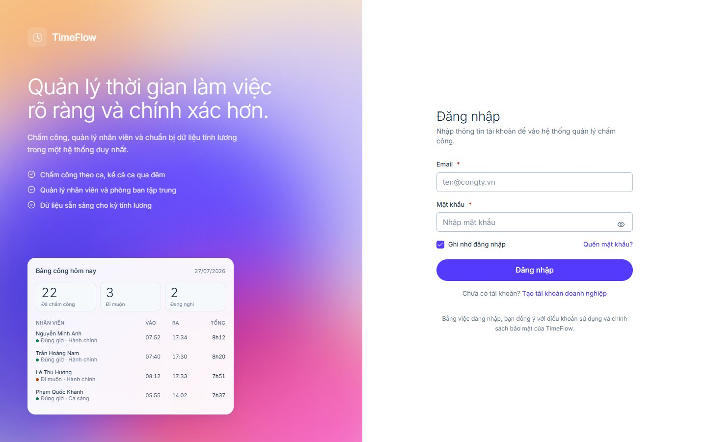
Một người có thể thuộc nhiều doanh nghiệp. Khi đó sau khi đăng nhập sẽ có bước chọn doanh nghiệp, và đổi qua lại được bằng nút Chuyển doanh nghiệp ở thanh trên cùng.
Vai trò khai ở hồ sơ từng người, sửa được bất cứ lúc nào.
| Vai trò | Thấy và làm được gì |
|---|---|
| Chủ sở hữu | Toàn quyền: cấu hình doanh nghiệp, mức lương của mọi người, chốt kỳ, chốt lương |
| Quản trị viên | Như chủ sở hữu trong vận hành hằng ngày — dành cho người phụ trách nhân sự |
| Quản lý | Xem và duyệt trong phạm vi người mình quản lý |
| Nhân viên | Chấm công, xem công và phiếu lương của chính mình, gửi yêu cầu |
Nhân viên không nhìn thấy lương của người khác, và mặc định cũng chưa thấy phiếu lương của chính mình — quyền đó phải được bật riêng ở từng hồ sơ. Chi tiết ở bước 07.
Cô lập giữa các doanh nghiệp được thực thi ở tầng cơ sở dữ liệu, không phải chỉ ẩn trên giao diện. Dán mã nhân viên của một doanh nghiệp khác vào thanh địa chỉ cũng chỉ nhận được "không tồn tại".
Ba màn hình quyết định mọi con số về sau. Khai sai ở đây thì bảng lương sai, và không màn hình nào báo lỗi.
Mỗi ca gồm tên, mã, độ dài, giờ nghỉ giữa ca, mức cho phép đi muộn, và lịch làm việc theo thứ trong tuần. Có hai kiểu ca:
| Kiểu ca | Dùng khi nào | Tính đi muộn, về sớm? |
|---|---|---|
| Có giờ vào, giờ ra | Ca cố định: hành chính, ca sáng, ca chiều, ca đêm | Có |
| Theo số giờ | Làm linh hoạt, chỉ cần đủ số giờ trong ngày | Không |
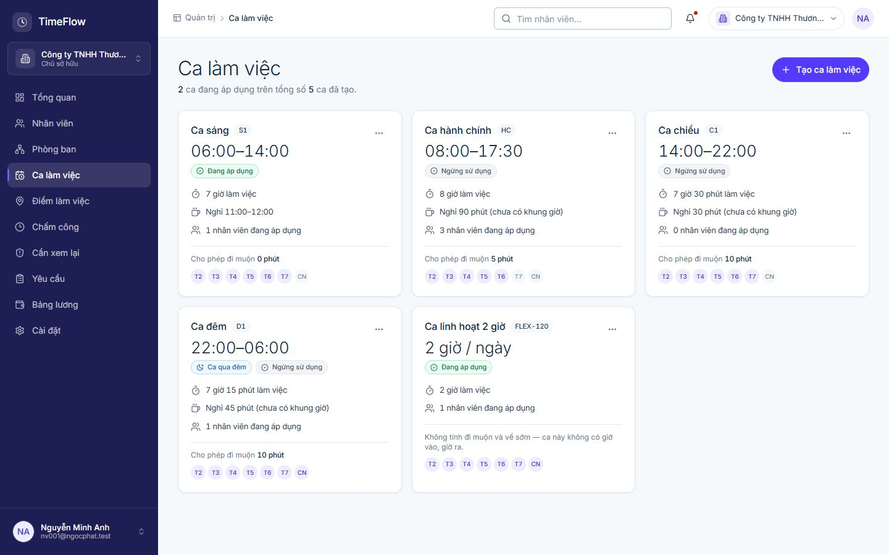
Ngày nằm ngoài lịch làm việc của ca được xếp là ngày nghỉ, và toàn bộ giờ làm hôm đó thành tăng ca. Doanh nghiệp mở cả tuần mà quên tích ô Chủ nhật thì mỗi Chủ nhật sẽ đội lên đáng kể — bảng lương vẫn hiện bình thường, không có cảnh báo nào.
Có thể nhân bản một ca rồi sửa bản sao, thay vì khai lại từ đầu. Ca không dùng nữa thì chuyển sang Ngừng sử dụng — dữ liệu công cũ vẫn giữ nguyên.
Toạ độ nơi làm việc cùng bán kính cho phép. Nhân viên chấm công trong bán kính thì hệ thống ghi nhận thẳng; ra ngoài bán kính thì bắt chụp ảnh và đưa bản ghi vào danh sách cần xem lại. Đây là cơ chế chống chấm công hộ.
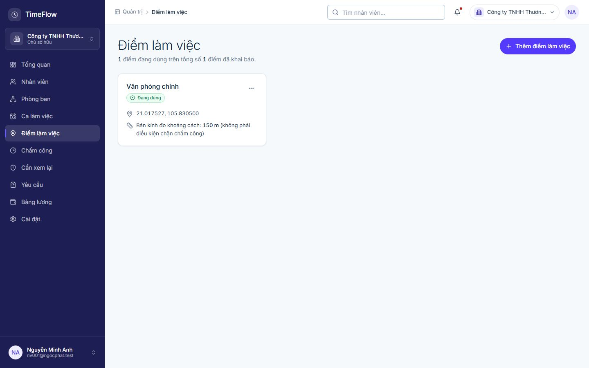
Cách lấy toạ độ: đứng tại nơi làm việc, mở Google Maps, bấm giữ vào vị trí, sao chép cặp số hiện ra rồi dán vào Điểm làm việc → Thêm điểm làm việc. Bán kính 100–150 m hợp với một mặt bằng phố; nhà máy hoặc kho rộng thì để lớn hơn. Nhiều chi nhánh thì khai nhiều điểm.
Không có toạ độ thì không có gì để đối chiếu: chấm công vẫn chạy, nhưng hệ thống không bao giờ hỏi ảnh và danh sách Cần xem lại sẽ luôn trống. Đây là việc nên làm trong ngày đầu.
Ở Cài đặt → Chung, doanh nghiệp chọn một trong hai cách quy giờ làm ra ngày công. Khác biệt chỉ lộ ra khi có người làm thiếu giờ.
Ví dụ một người lương 300.000 ₫/ngày, ngày chuẩn 8 giờ, tăng ca 50.000 ₫/giờ:
| Hôm đó làm | Có ca cụ thể | Không có ca — theo giờ chuẩn |
|---|---|---|
| 8 giờ — đủ công | 300.000 ₫ | 300.000 ₫ |
| 10 giờ | 300.000 + 100.000 = 400.000 ₫ | 300.000 + 100.000 = 400.000 ₫ |
| 6 giờ — về sớm | 300.000 ₫ đủ một công | 225.000 ₫ 0,75 công |
Nói gọn: Có ca cụ thể trả đủ một công dù về sớm — cộng giờ thì tính, trừ giờ thì không. Không có ca thì đối xứng cả hai chiều, và ngày công ra số thập phân.
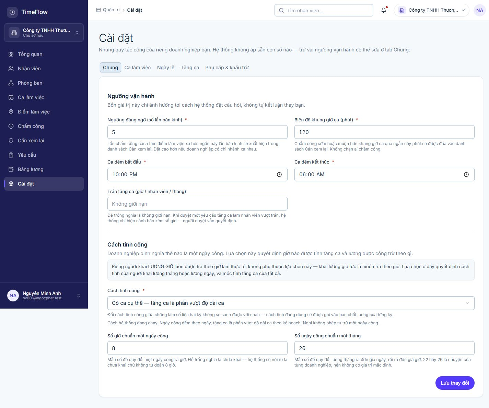
Ba tab còn lại khai một lần rồi ít khi đụng tới: Ngày lễ (danh sách ngày lễ của doanh nghiệp), Tăng ca (hệ số theo loại ngày — thường, cuối tuần, ngày lễ), Phụ cấp & khấu trừ (các khoản cố định theo kỳ, áp theo phòng ban hoặc chức vụ).
Tám bước, chạy trên máy tính. Đây là phần người quản trị làm.
Đăng nhập xong là vào đây. Bốn con số trên cùng trả lời câu hỏi "hôm nay thế nào": tổng nhân viên, đã chấm công, đi muộn, đang nghỉ. Bên dưới là biểu đồ bảy ngày, hoạt động trong ngày, yêu cầu chờ duyệt, và danh sách ai chưa chấm công kèm nút gọi và nhắn tin ngay tại chỗ.
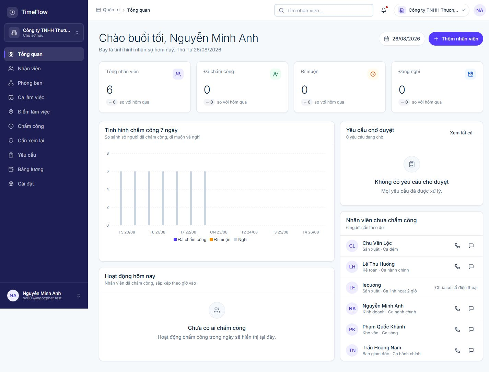
Màn hình Nhân viên là danh sách toàn doanh nghiệp: tìm theo tên có dấu hay không dấu đều ra, lọc theo phòng ban, trạng thái và loại hợp đồng. Tích chọn nhiều dòng thì đổi phòng ban được hàng loạt.
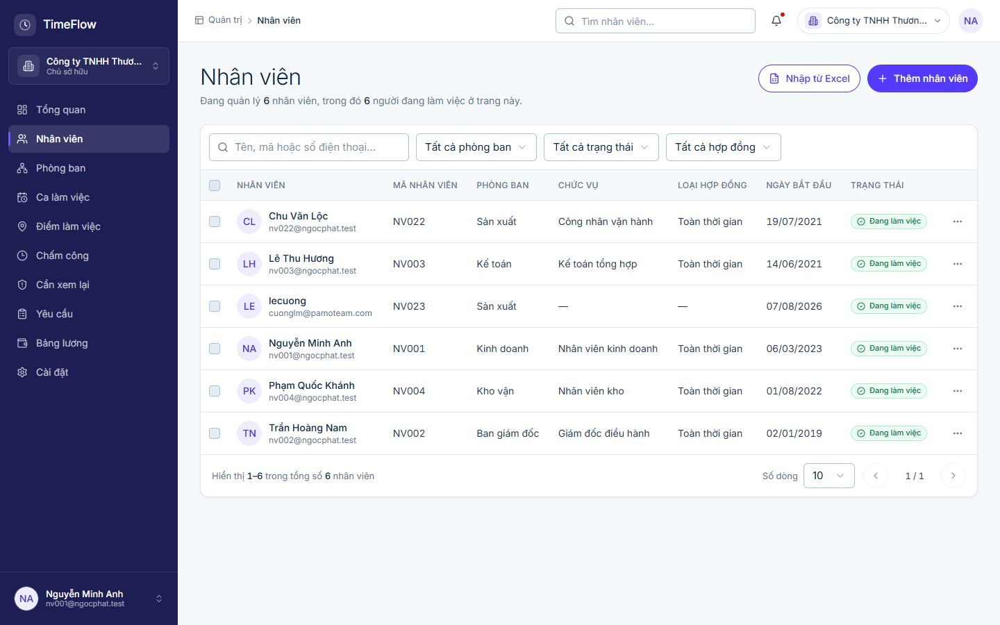
Nhân viên → Thêm nhân viên. Một biểu mẫu duy nhất, chia bốn khối: thông tin cá nhân, thông tin công việc, mức lương, tài khoản. Mã nhân viên hệ thống tự đề xuất số tiếp theo, sửa được. Mã trùng bị chặn ngay, không phân biệt hoa thường.
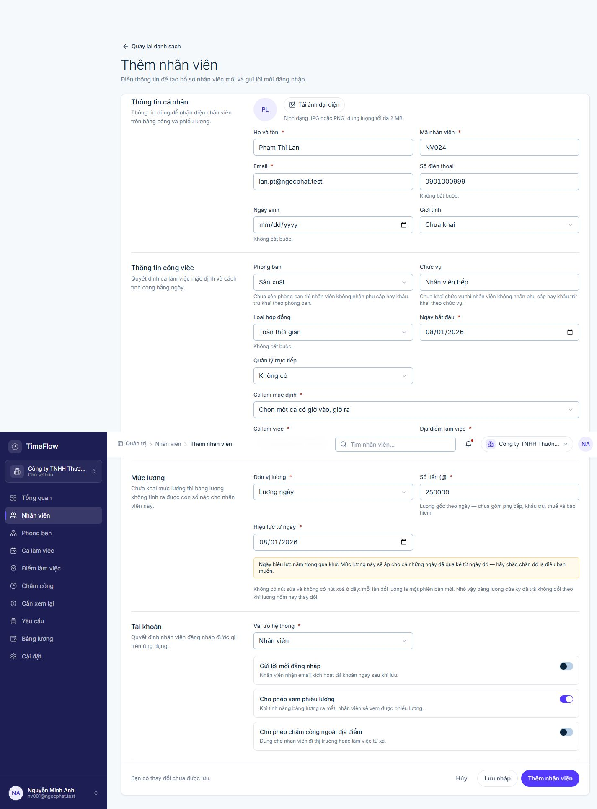
Gửi lời mời đăng nhập — nhân viên nhận email kích hoạt ngay sau khi lưu. Tắt đi thì cấp tài khoản bằng tay ở bước sau.
Cho phép xem phiếu lương — cân nhắc kỹ. Bật nhầm thì người ta đã nhìn thấy lương rồi, không thu lại được; nên để tắt và bật lại từng người khi đã quyết.
Cho phép chấm công ngoài địa điểm — chỉ bật cho người đi thị trường hoặc làm từ xa. Bật cho tất cả là vô hiệu hoá phần chống gian lận.
Nút Nhập từ Excel ở đầu danh sách dùng khi khai lần đầu cho cả doanh nghiệp, thay vì gõ tay từng người.
Bấm vào một người trong danh sách để mở hồ sơ. Năm tab: Tổng quan, Chấm công, Lịch làm việc, Yêu cầu, Thông tin lương.
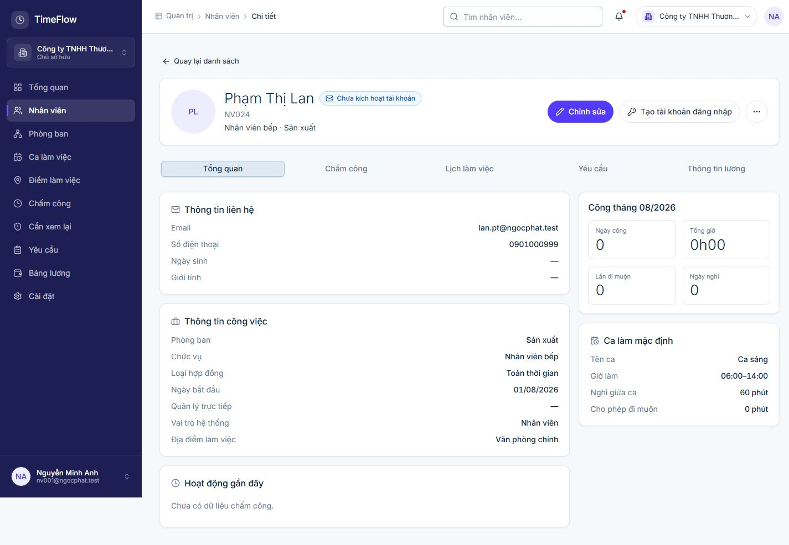
Tab Thông tin lương là nơi khai và xem lịch sử mức lương. Ở đây không có nút sửa và không có nút xoá — mỗi lần đổi lương là thêm một dòng mới có mốc hiệu lực riêng. Nhờ vậy bảng lương của kỳ đã trả không bị tính lại khi lương hôm nay thay đổi.
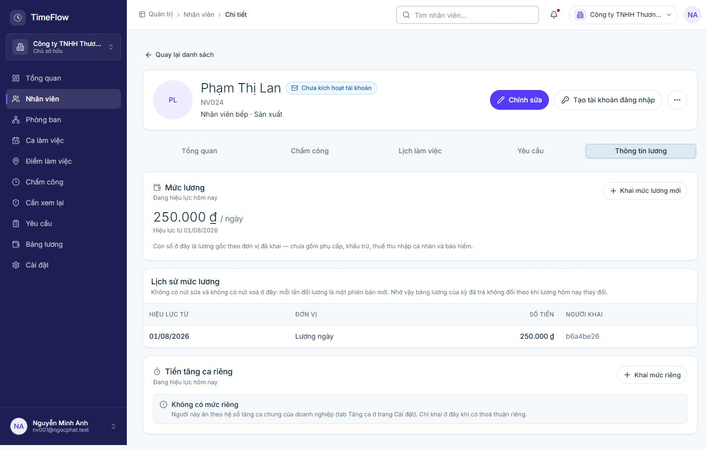
Hồ sơ mới tạo mà chưa gửi lời mời thì chưa đăng nhập được — trạng thái ghi "Chưa kích hoạt tài khoản". Bấm Tạo tài khoản đăng nhập ở đầu hồ sơ, hệ thống sinh một mật khẩu tạm.
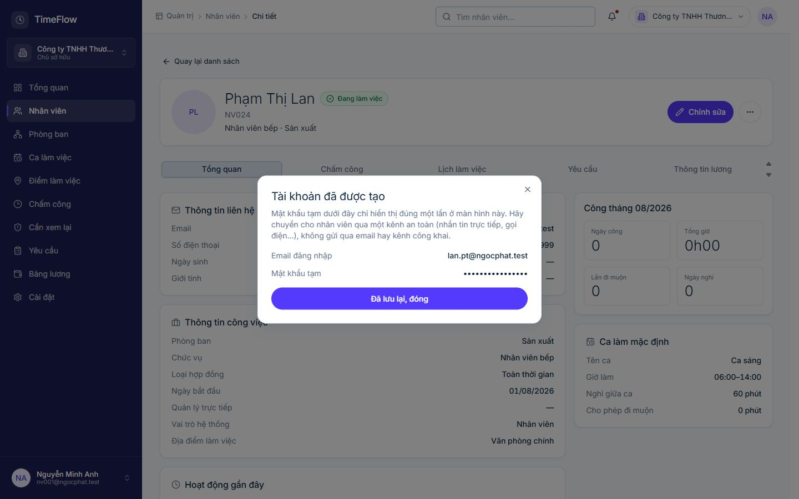
Đóng hộp thoại là mất mật khẩu tạm, không xem lại được. Chép ra hoặc nhắn thẳng cho nhân viên trước khi bấm đóng, qua tin nhắn riêng hoặc gọi điện — đừng gửi vào nhóm chat chung.
Lỡ mất thì không sao: bấm lại Tạo tài khoản đăng nhập để sinh mật khẩu tạm mới. Người dùng mật khẩu tạm bị bắt đổi ngay ở lần đăng nhập đầu.
Chấm công hiện lưới cả tháng: mỗi hàng một người, mỗi cột một ngày. Ký hiệu đọc nhanh — ✓ đúng giờ, M đi muộn, S về sớm, ! thiếu giờ ra, P nghỉ phép, K nghỉ không phép, – không có bản ghi. Cột cuối là tổng ngày công.
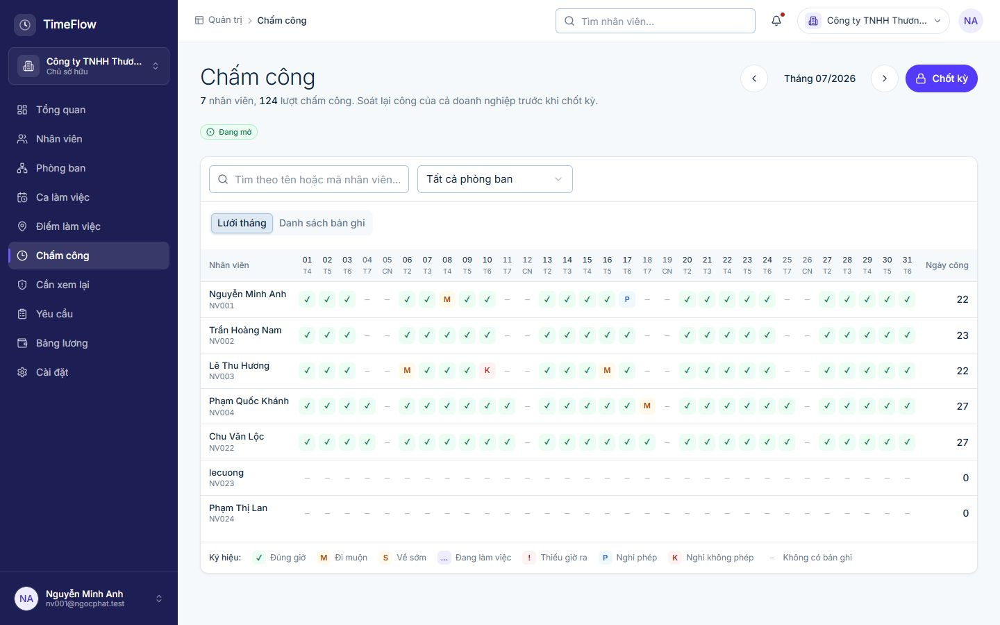
Việc cần làm ở đây trước khi chốt kỳ: rà những ô ! — người ta quên bấm tan ca — và những ô – rơi vào ngày đáng lẽ có người làm.
Màn hình Cần xem lại gom các bản ghi bất thường: chấm công cách xa điểm làm việc, hoặc nằm ngoài khung giờ ca. Hệ thống không tự kết luận ai gian lận — GPS đo sai, đi công tác, làm thêm ngoài ca, hay khai sai ca đều ra dấu hiệu giống nhau. Nó đưa bằng chứng, người quản trị quyết.
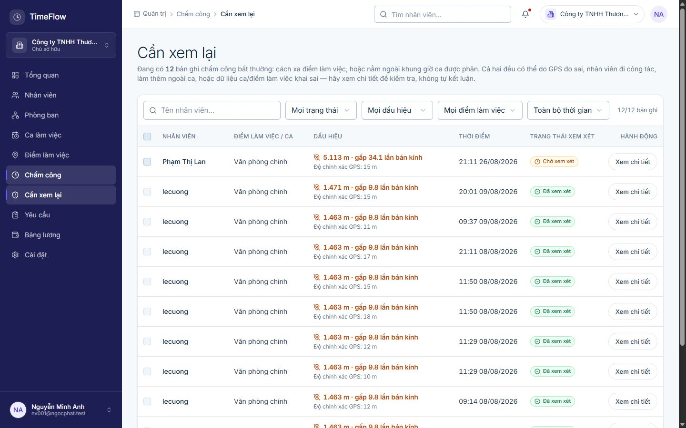
Bấm Xem chi tiết để mở bằng chứng của cả lần vào ca lẫn lần ra ca: ảnh chụp hiện trường, toạ độ thô, độ chính xác GPS mà thiết bị tự khai, và liên kết mở thẳng Google Maps.
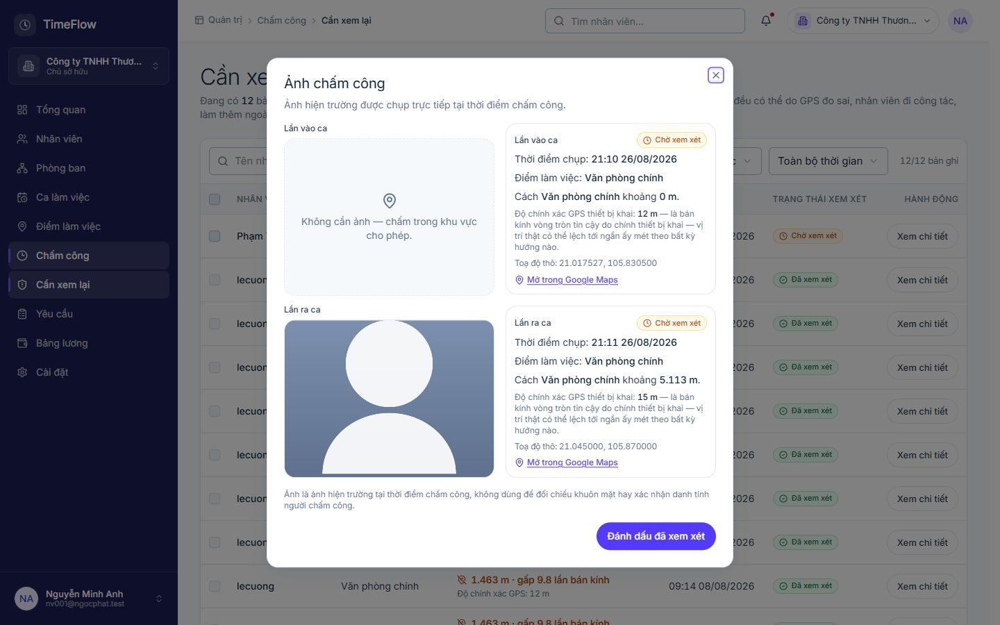
Xem xong bấm Đánh dấu đã xem xét để bản ghi rời khỏi hàng chờ.
Khi đã rà xong cả tháng, bấm Chốt kỳ ở màn hình Chấm công. Sau khi chốt, số liệu công của tháng đó đóng băng: kể cả chấm công hằng ngày cũng bị từ chối, mọi thay đổi phải đi qua một yêu cầu được duyệt.
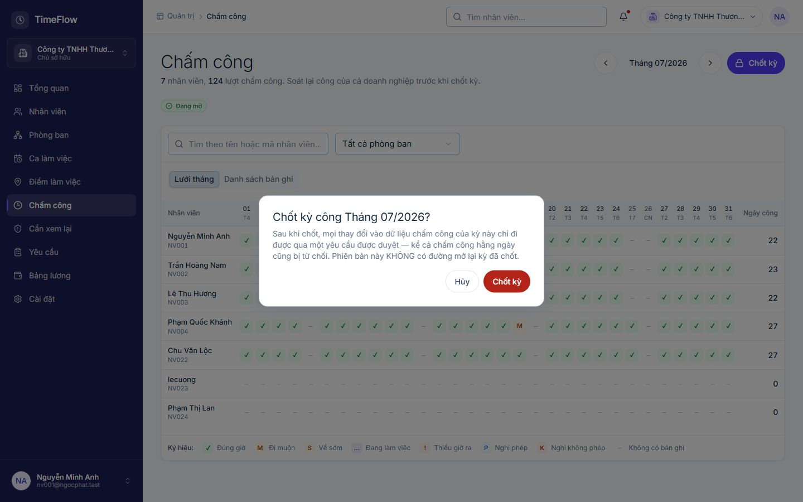
Phiên bản hiện tại không có đường mở lại kỳ công đã chốt. Chốt nhầm tháng, hoặc chốt khi tháng chưa hết, là không sửa được bằng giao diện.
Quy tắc an toàn: chỉ bấm nút này sau ngày cuối cùng của tháng, và sau khi đã rà hết ô ! lẫn danh sách Cần xem lại.
Bảng lương mở ra ở tháng trước — đúng thói quen "đầu tháng này tính lương tháng trước". Dòng tóm tắt trên cùng cho biết tổng số người, tổng ngày công, tổng giờ làm, tổng giờ tăng ca và tổng thực nhận.
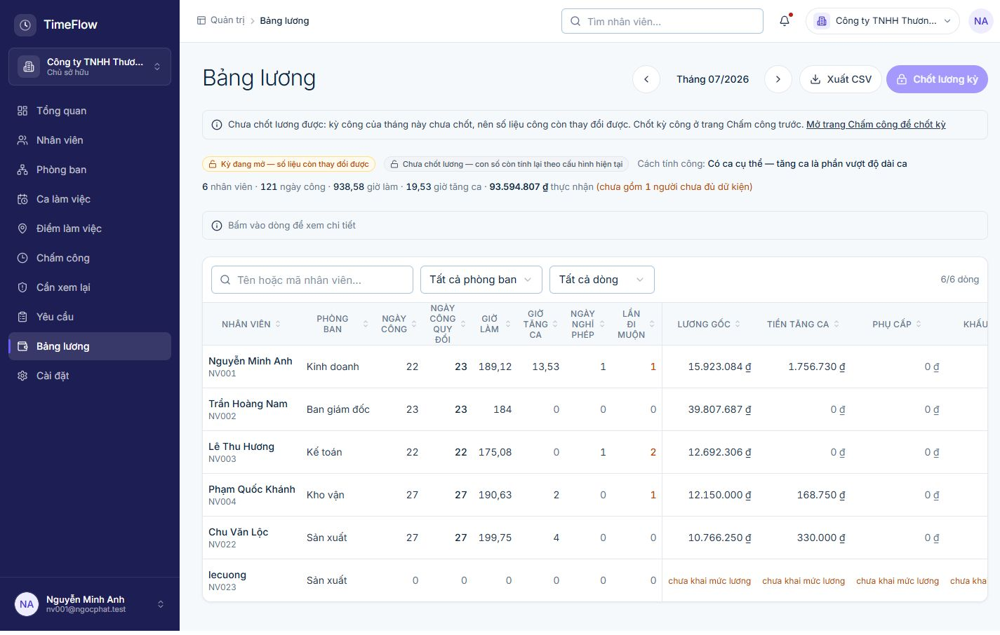
Bấm vào một dòng để mở chi tiết cách ra con số: cơ sở tính, phụ cấp, khấu trừ, và tiền phát sinh của từng ngày trong tháng. Đây là chỗ để trả lời khi nhân viên hỏi "sao tháng này em ít hơn tháng trước".
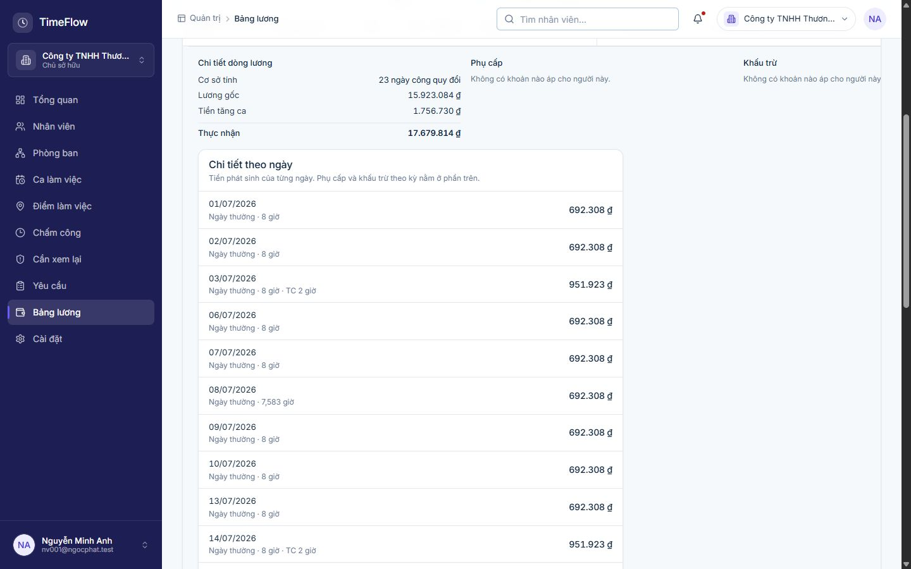
Nút Xuất CSV tải toàn bộ bảng về máy — mở bằng Excel để in hoặc gửi kế toán. Nút Chốt lương kỳ chỉ bấm được sau khi kỳ công đã chốt; trước đó hệ thống nói rõ lý do và chỉ đường sang trang Chấm công.
Không có phần này thì bảng lương không bao giờ có số. Đây là phần cần hướng dẫn tận tay từng người trong ngày đầu.
Nhân viên mở cùng địa chỉ trên điện thoại. Giao diện tự chuyển sang khổ dọc, bốn mục dưới đáy: Trang chủ, Bảng lương, Yêu cầu, Cá nhân.
Ai đăng nhập bằng mật khẩu tạm sẽ bị chặn ở màn hình đổi mật khẩu — không đổi thì không đi tiếp được. Đây là hành vi đúng, không phải lỗi.
Bảo nhân viên lưu trang vào màn hình chính điện thoại (Safari: nút Chia sẻ → Thêm vào MH chính; Chrome: menu ba chấm → Thêm vào MH chính). Từ đó nó mở như một ứng dụng, không phải gõ địa chỉ mỗi ngày.
Trang chủ hiện đồng hồ chạy, tên ca, điểm làm việc và một nút lớn Vào ca. Bấm nút, điện thoại xin quyền vị trí — phải bấm Cho phép, không có vị trí thì không chấm công được.
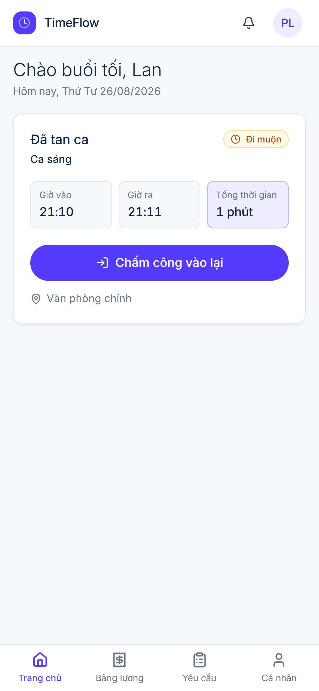
Nếu GPS xác nhận người đó đang trong bán kính của điểm làm việc, hệ thống ghi nhận ngay — không mở camera, không hỏi gì thêm. Nhanh gọn cho việc thường ngày.
Ra ngoài bán kính thì camera bật lên và hệ thống nói rõ đang cách bao nhiêu mét. Không chụp ảnh thì không gửi được.
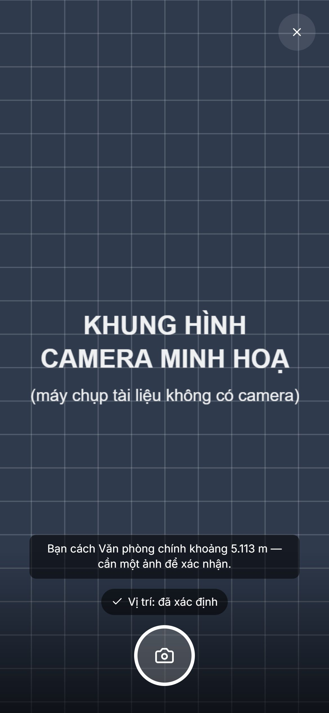
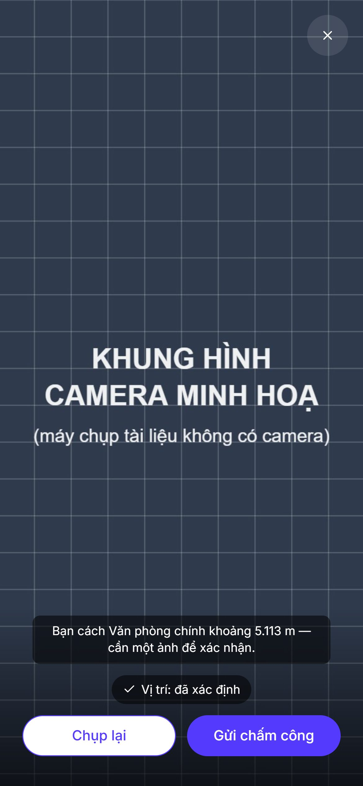
Gửi xong, hệ thống báo thẳng: "Đã ghi nhận — cách xa điểm làm việc. Quản trị sẽ xem lại bản ghi này." Bản ghi vẫn được tính, chỉ là nó xuất hiện trong danh sách Cần xem lại. Nhân viên biết mình đang bị ghi nhận — đó là điều tốt, minh bạch hai chiều.
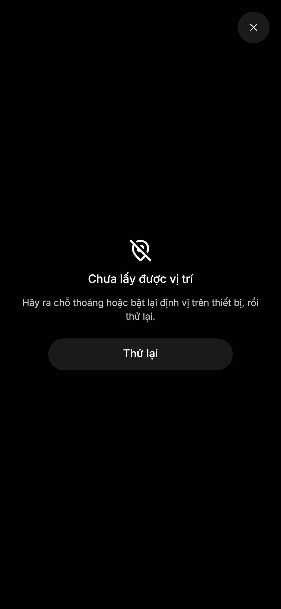
Cách xử lý theo thứ tự: bước ra chỗ thoáng rồi bấm Thử lại; nếu vẫn không được thì vào Cài đặt điện thoại bật lại Định vị và cấp quyền vị trí cho trình duyệt. Cùng lắm thì làm việc bình thường rồi gửi yêu cầu bổ sung chấm công ở bước 19.
Mục Bảng lương hiện thực nhận của tháng, tổng hợp ngày công, giờ làm, giờ tăng ca, số lần đi muộn — và chi tiết từng ngày. Chỉ thấy của chính mình.
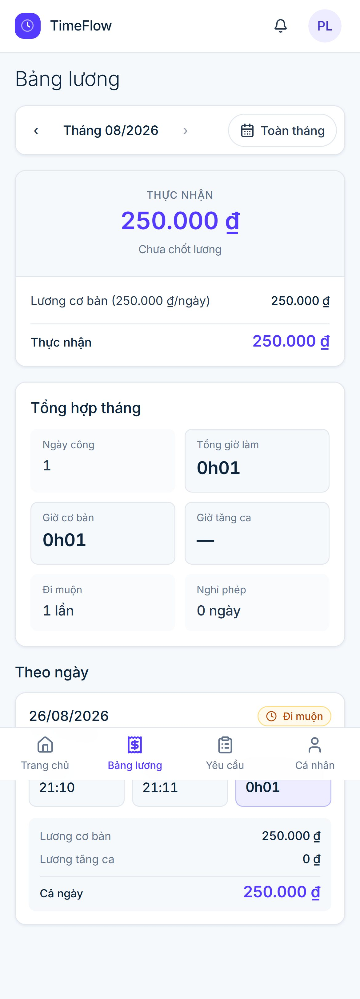
Mục Yêu cầu → Tạo yêu cầu. Bốn loại: Xin nghỉ phép, Bổ sung chấm công (quên bấm), Điều chỉnh giờ vào/ra (bấm sai giờ), Đăng ký tăng ca.
Phía quản trị: mở Yêu cầu, người chờ lâu nhất xếp lên đầu. Duyệt hay từ chối đều ghi lại người quyết định và thời điểm. Nếu doanh nghiệp có khai trần tăng ca, việc duyệt một yêu cầu làm nhân viên vượt trần sẽ kèm cảnh báo — nhưng người duyệt vẫn quyết.
Ai làm gì, vào lúc nào. In phần này dán ở nơi làm việc là đủ dùng.
| Khi nào | Ai | Làm gì |
|---|---|---|
| Đầu mỗi ca | Nhân viên | Mở ứng dụng, bấm Vào ca |
| Cuối mỗi ca | Nhân viên | Bấm Tan ca. Quên thì hôm sau gửi yêu cầu bổ sung chấm công |
| Mỗi sáng, 2 phút | Quản trị | Mở Tổng quan, xem ai chưa chấm công, gọi ngay từ danh sách |
| Trong tuần, khi có | Quản trị | Duyệt Yêu cầu; xử lý Cần xem lại |
| Ngày cuối tháng | Quản trị | Mở Chấm công, rà hết ô ! và ô – bất thường |
| Sau khi rà xong | Quản trị | Bấm Chốt kỳ — nhớ là không mở lại được |
| Đầu tháng sau | Quản trị | Mở Bảng lương, đối chiếu, Xuất CSV, rồi Chốt lương kỳ |
| Khi có người mới | Quản trị | Thêm nhân viên → khai mức lương → cấp tài khoản đăng nhập |
| Khi có người nghỉ | Quản trị | Mở hồ sơ → Chỉnh sửa → đổi trạng thái sang Đã nghỉ việc |
| Khi đổi lương | Quản trị | Tab Thông tin lương → Khai mức lương mới, đặt đúng ngày hiệu lực |
Cái chung của cả sáu: hệ thống không báo lỗi, con số vẫn hiện ra bình thường — chỉ là sai.
Người chưa khai mức lương thì bảng lương ghi "chưa khai mức lương" ở mọi cột tiền, và người đó không được cộng vào tổng — dòng tóm tắt sẽ ghi "chưa gồm N người chưa đủ dữ kiện". Đọc lướt rất dễ tưởng tổng đã đủ. Cách kiểm: so con số N ấy với số người đáng lẽ có lương.
Không có nút mở lại. Chốt giữa tháng là khoá luôn phần còn lại của tháng — nhân viên chấm công sẽ bị từ chối. Chỉ chốt sau ngày cuối tháng.
Ngày ngoài lịch làm việc bị xếp là ngày nghỉ, và toàn bộ giờ làm hôm đó thành tăng ca. Mỗi lần tạo ca mới, kiểm lại dải bảy ô ngày trước khi lưu.
Khi một người đã được khai tiền tăng ca riêng, hệ thống bỏ qua hệ số theo loại ngày của doanh nghiệp — nghĩa là làm ngày lễ vẫn ăn đúng số tiền mỗi giờ ấy, không nhân theo Điều 98 Bộ luật Lao động.
Đó là hành vi có chủ ý: một mức, không phải bốn. Nhưng nếu doanh nghiệp muốn trả theo hệ số ngày lễ thì phải bỏ mức riêng của từng người và khai hệ số chung ở Cài đặt → Tăng ca. Nên hỏi kế toán trước khi chọn.
Không có toạ độ thì không có cảnh báo "chấm ngoài vùng", và màn hình Cần xem lại luôn trống. Hệ thống vẫn chạy, nhưng phần chống gian lận — lý do chính để dùng phần mềm này — chưa bật.
Hệ thống không có chức năng xoá hồ sơ nhân viên. Tạo nhầm một người thì cách duy nhất là mở hồ sơ, bấm Chỉnh sửa và đổi trạng thái sang Đã nghỉ việc — hồ sơ vẫn nằm đó, chỉ bị lọc khỏi bộ lọc mặc định.
Vì vậy: kiểm lại tên và mã trước khi bấm Thêm nhân viên, và đừng dùng dữ liệu thật để thử nghiệm.